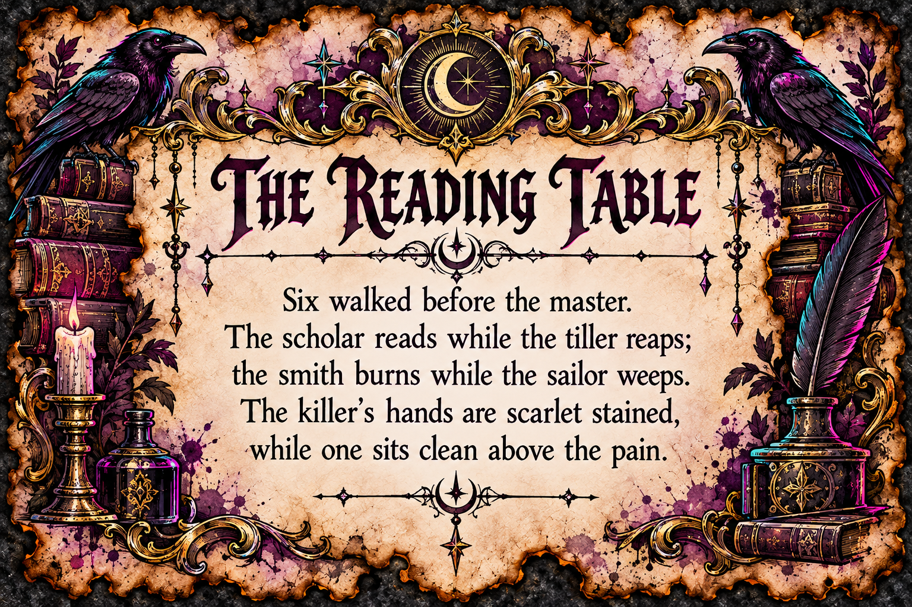
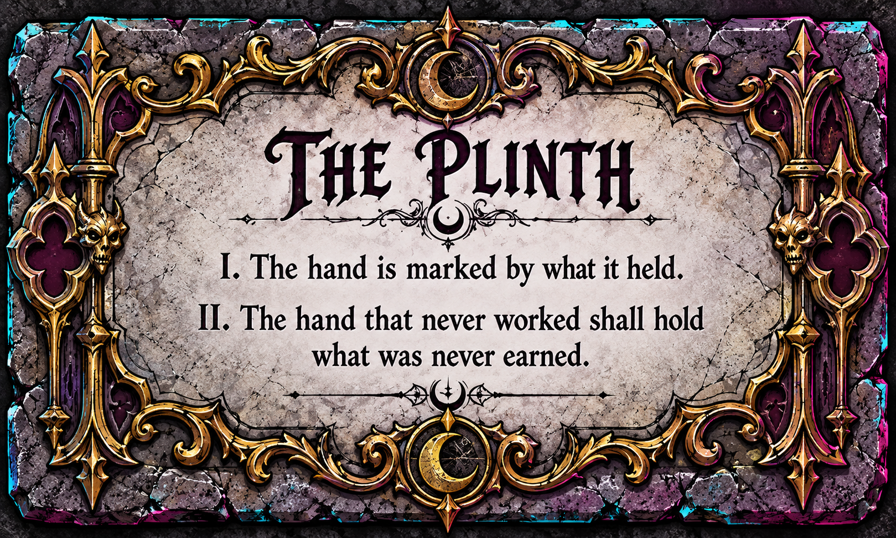
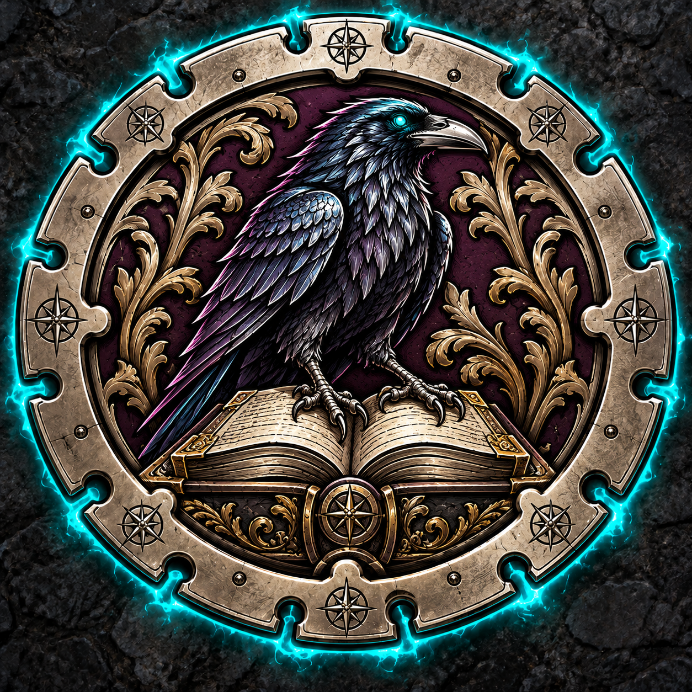

DM-held inspection slips
Cut apart before play. Give only the slip earned by inspecting that statue; keep all others hidden.
1 — VictoriaBlack ink is ground into her fingertips and thumbs.
2 — AlexiDried, flaking mud is caked on his boots and coat hem.
3 — TeresaDark crimson stains her palms and the skin under her fingernails.
4 — ValeriusHe smells of salt and brine. Tiny barnacles cling to his shoulder plates.
5 — BorislavBlack soot smears his jaw, knuckles and forearms.
6 — BarovNothing. No stain, no grime, not even dust. He gleams as if polished this morning.
DM-held progressive clues
Reading table: reveal at minute 2–3 if needed, or when the runner is lifted. Cut the art apart from these instructions.

Plinth plate: reveal at minute 8–9, automatically by 9:00.

DM-held reward and encounter
Archive Crest #1

Give the crest only when all six relics are matched. Reveal the Spectre only after the crown/dagger taboo swap. Cut its silhouette and mount in a clip or on a folded base.
Full-title labels — reveal after success
Arch-Librarian Victoria
Lord Alexi the Harvester
Lady Teresa the Traitor
Admiral Valerius
Forge-Master Borislav
King Barov the Spotless
Keep these separate until solved. Do not print titles on the backs of player cards where they might be seen early.